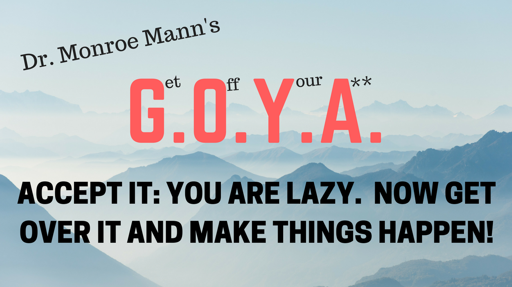

Monroe shares 7 timely news stories, and after each one, extemporaneously writes and sings a totally improvised song based on that particular news story. Learn something while laughing. Huzzah!
F - Financing; A - Attitude; M - Marketing; E - Entertainment Law -- all to help you find acclaim for whatever you are doing: showbiz, entrepreneurship, not-for-profit development, athletics, and more!
Using his PhD in psychology, his MBA in finance, his law degree, and his contagious inspirational style, Monroe helps you get over your roadblocks in life and make the most of the opportunities before you.
Monroe improvs the news and reviews books as Kino Surf, The Pirate, Carnaval, Billybob, The Detective, Jorg from Mexico, and more! All improv comedy. No rehearsals, just improvised enlightenment.
NOTE: Why subscribe? You'll then get my new videos in your YouTube list of 'upcoming videos'. Even better, if you click the 'bell', you'll also receive notifications each time I post a new video. But most importantly, my mission is to get to 1,000 subscribers as soon as I can. Why? Well, once I hit 1,000, YouTube will start to pay me! That'll be a fun day! Thank you for your support!